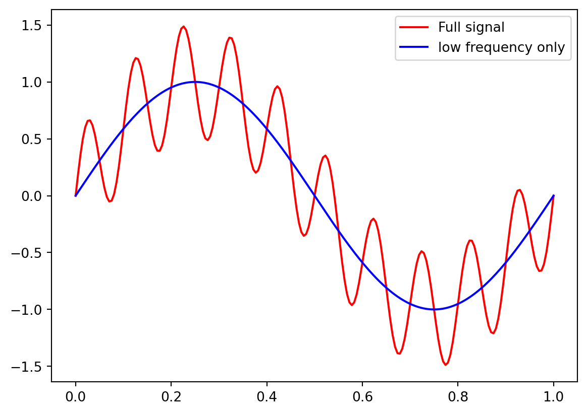
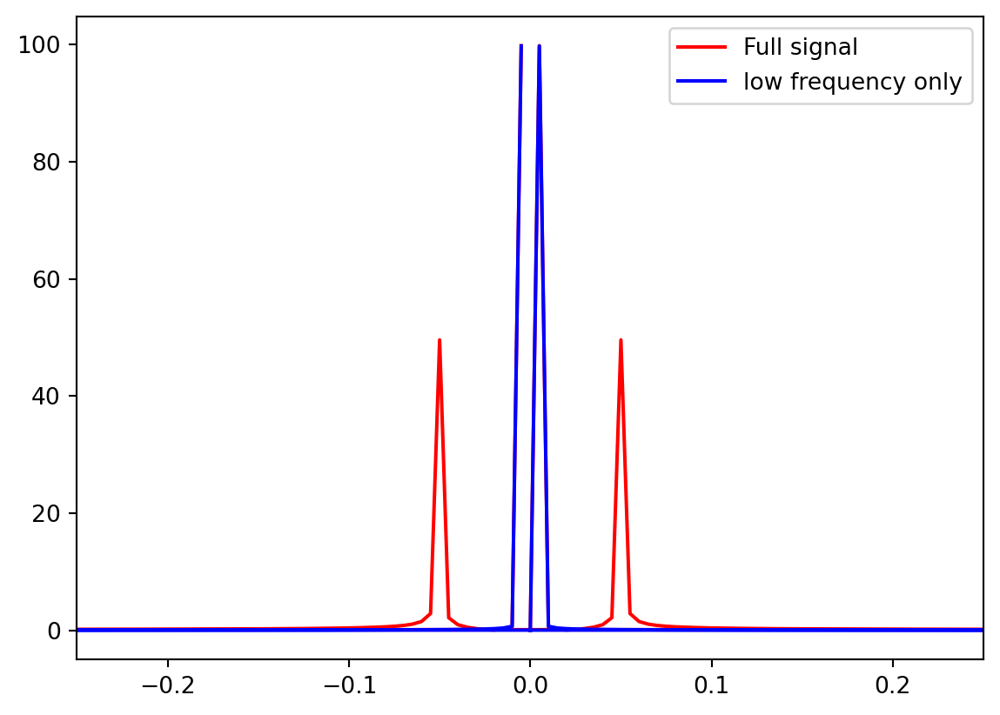
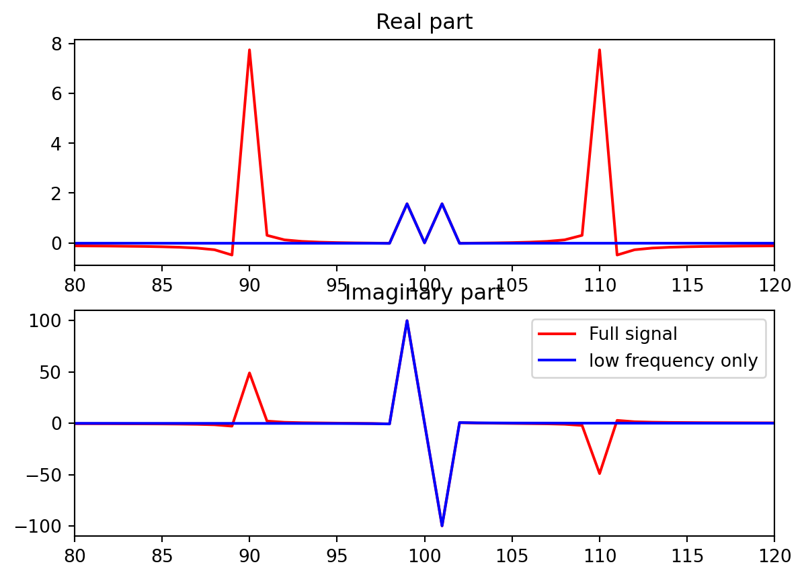
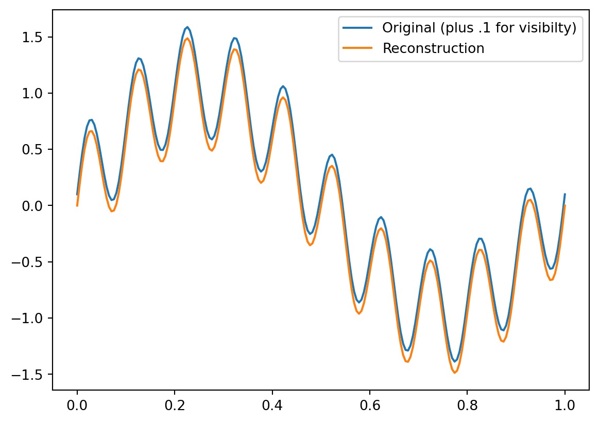
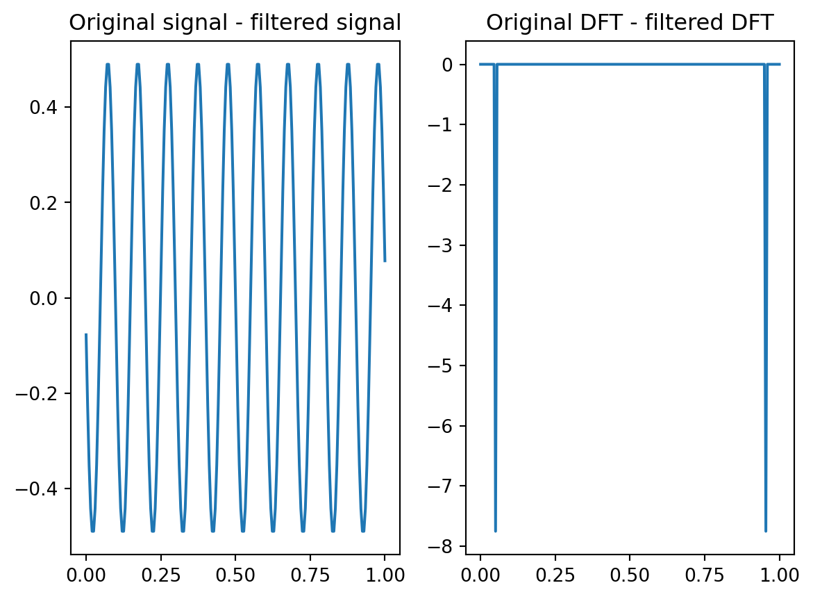
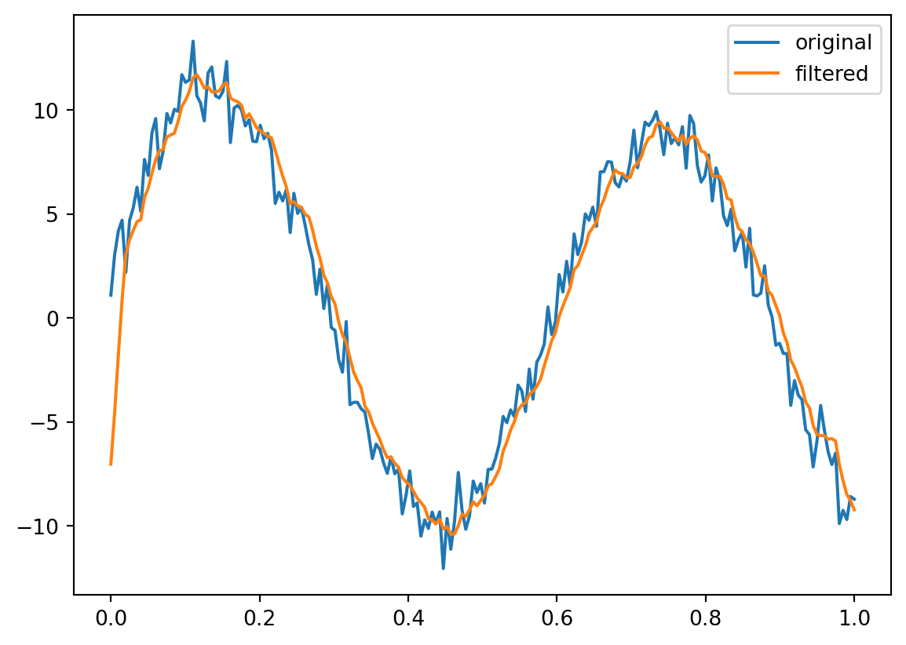

The component of the vector \(b\) along the line spanned by \(a\) is \(b^{\mathrm{T}} a / a^{\mathrm{T}} a\).
. . .
A Fourier series is projecting \(f(x)\) onto \(\sin x\). Its component \(p\) in this direction is exactly \(b_{1} \sin x\).
Euler’s formula
The complex exponential \(e^{i x}\) is a combination of \(\cos x\) and \(\sin x\):
\[
e^{i x}=\cos x+i \sin x
\]
. . .
So we can rewrite the Fourier series using complex exponentials:
\[
f(x)=c_{0}+c_{1} e^{i x}+c_{2} e^{2 i x}+\cdots = \sum_k c_k\cdot e^{i k x}
\]
pause
. . .
The formula for finding the coefficients \(c_{k}\) is the same as before, but now we use the complex exponential functions \(e^{i k x}\) instead of the sines and cosines:
The DFT can be written as a matrix-vector product \(\mathbf{y} = F \mathbf{c}\).
The coefficients \(\mathbf{c}\) can be found by \(\mathbf{c} = F^\prime \mathbf{y}\).
But of course it is also true from 1 that if \(F\) is invertible, that \(\mathbf{c} = F^{-1} \mathbf{y}\). Therefore, \(F^{-1} = F^\prime=\frac{1}{N} F^*\).
This means that \(F\) is unitary. Its rows and columns are orthogonal.
A concrete example
Let’s take an example with \(N=4\) and \(y=(2, 4, 6, 8)\).
Make a table. Note that \(i^2 = i^6 = -1\), \(i^3 = i^7 = -i\), and \(i^4 = 1\).
We call the matrix \(F\) the DFT (Discrete Fourier Transform) matrix. It is a square unitary matrix of size \(N \times N\).
. . .
The matrix \(F^\prime\) is the inverse DFT matrix. It is the complex conjugate of \(F\) divided by \(N\).
Summary
The DFT can be written as a matrix-vector product \(\mathbf{y} = F \mathbf{c}\).
The coefficients \(\mathbf{c}\) can be found by \(\mathbf{c} = F^\prime \mathbf{y}\).
F is easy to compute, with a simple formula for each entry.
(There’s actually a really really fast way to compute the DFT using the FFT algorithm.)
Applications of the DFT
Filtering
The DFT is used in many applications, but one of the most common is filtering.
. . .
For example, suppose we have a signal that is a sum of two sinusoids:
\[
f(x) = \sin(2\pi x) + 0.5 \sin(20\pi x)
\]
import numpy as npimport matplotlib.pyplot as pltN =200x = np.linspace(0, 1, N)y = np.sin(2*np.pi*x) +0.5*np.sin(20*np.pi*x)yalone = np.sin(2*np.pi*x)plt.plot(x, y, label='full signal', color='red')plt.plot(x, yalone, label='low frequency only', color='blue')plt.legend(['Full signal', 'low frequency only'])plt.show()

What’s the DFT of this signal?
from scipy.fft import fft, fftshiftyf = fft(y)yfalone = fft(yalone)# make a non connected plot of yfplt.plot(np.fft.fftfreq(200),np.abs(yf), color='red')plt.plot(np.fft.fftfreq(200),np.abs(yfalone), color='blue')plt.xlim(-0.25, 0.25)plt.legend(['Full signal', 'low frequency only'])plt.show()

What’s with the double peaks?
# make two subplotsax1 = plt.subplot(2,1, 1)ax2 = plt.subplot(2,1, 2)ax1.plot(np.real(fftshift(yf)), color='red')ax1.plot(np.real(fftshift(yfalone)), color='blue')ax1.set_xlim(80, 120)ax1.set_title("Real part")ax2.plot(np.imag(fftshift(yf)), color='red')ax2.plot(np.imag(fftshift(yfalone)), color='blue')ax2.set_title("Imaginary part")# set x-axis to be from -100 to 100plt.xlim(80, 120)plt.legend(['Full signal', 'low frequency only'])

Reconstruct the signal
We can reconstruct the signal by taking the inverse DFT.
from scipy.fft import iffty_old = ifft(yf)plt.plot(x, y+.1, label='Original (plus .1 for visibilty)')plt.plot(x, y_old, label='Reconstruction')plt.legend()plt.show()
/Users/kendra/Library/Python/3.8/lib/python/site-packages/matplotlib/cbook/__init__.py:1345: ComplexWarning:
Casting complex values to real discards the imaginary part

Low-pass filtering
What if we just zero out the coefficient corresponding to the second sinusoid:
# find the ifft of the function with the zeroed out coefficientschange = ifft(yf_new-yf)# make two subplotsax1 = plt.subplot(1,2, 1)ax1.plot(x, change)ax1.set_title('Original signal - filtered signal')ax2 = plt.subplot(1,2, 2)ax2.plot(x,yf_new-yf)ax2.set_title('Original DFT - filtered DFT')plt.show()

Try one more thing. Can we describe the change in the DFT as a multiplicative vector? We sure can.
OK. We note that this can also be written as a convolution, between the signal and the vector \(h = [1, 1, 1, 1, 1, 0, 0, 0, ...]/5\)., where we have padded the vector with zeros so that it is the same length as the signal vector.
That is, \(h_0 = 1/5\), \(h_1 = 1/5\), \(h_2 = 1/5\), \(h_3 = 1/5\), \(h_4 = 1/5\), and \(h_5 = 0\), all the way to \(h_n=0\).
It’s messy to compute the convolution directly. But we can do it in the Fourier domain…
The convolution theorem
The convolution of two signals \(f\) and \(h\) is the inverse DFT of the product of the DFTs of \(f\) and \(h\).
. . .
In other words, if \(f = \text{ifft}(F)\) and \(h = \text{ifft}(H)\), then the convolution of \(f\) and \(h\) is \(\text{ifft}(F \cdot H)\).
. . .
That’s much easier to calculate – only a dot product!
Proof
(fill in if I have time)
Example
Let’s take the signal from before, \(f(x) = \sin(2\pi x) + 0.5 \sin(20\pi x)\), and filter it with the moving average filter \(h = [1, 1, 1, 1, 1]/5\).
Pad the filter with zeros to make it the same length as the signal.
Take the DFT of the filter.
Multiply the two DFTs.
Take the inverse DFT to get the filtered signal.
Done!
yf = fft(y)hf = fft(h, N) # pad h with zerosy_filtered = ifft(yf*hf)plt.plot(x, y, label='original')plt.plot(x, y_filtered, label='filtered')plt.legend()plt.show()

Then we can take the inverse DFT to get the filtered signal.